Обработка ошибок и исключения
Коды возврата, optional, expected и гарантии безопасности.
Error Handling
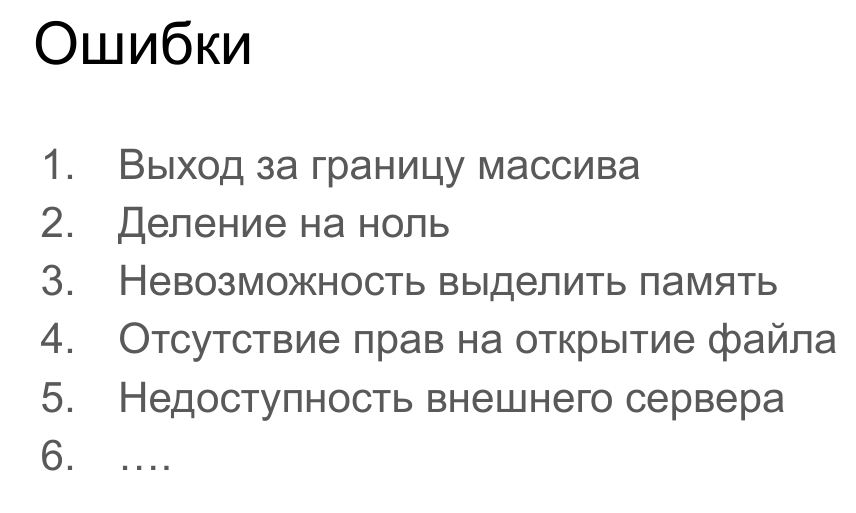
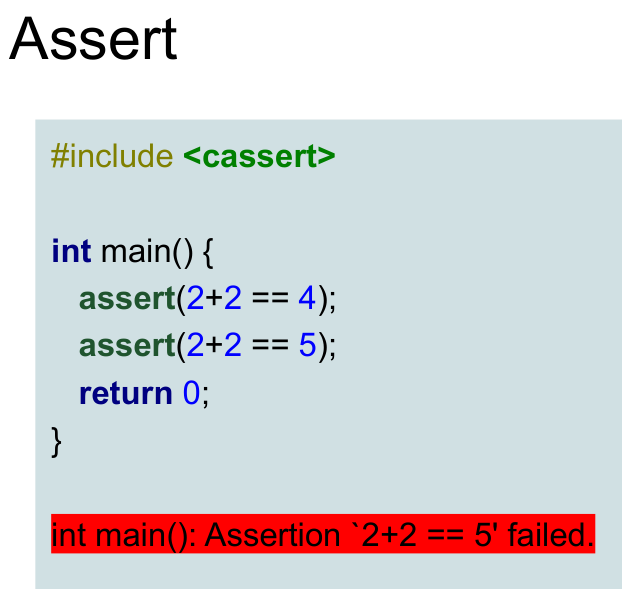
static_assert - ошибка на этапе компиляции
static_assert(sizeof(int) 4, "int must be 4 bytes");
Метод кодов возврата
старый подход иногда имеет смысл
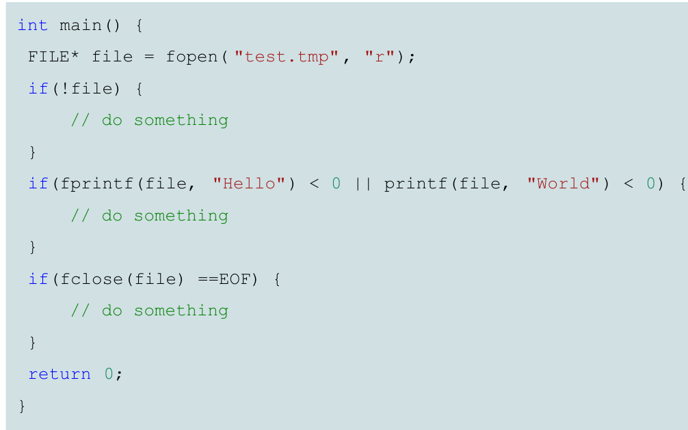
Метод Exception. throw + try + catch
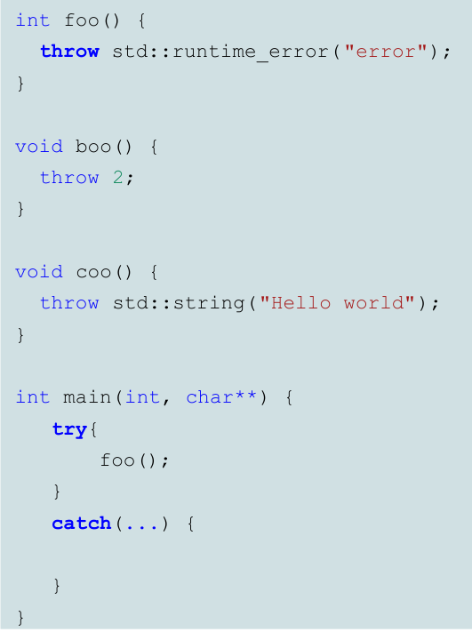
... ловит любую ошибку
int main() {
int a, b;
std::cin >> a >> b;
try {
if (std::cin.fail()) {
throw std::runtime_error("Input is not a number");
}
if (b == 0) {
throw std::runtime_error("Division by zero");
}
std::cout << "Result: " << a / b << std::endl;
}
catch (const std::runtime_error& e) {
std::cout << "Error: " << e.what() << std::endl;
}
return 0;
}если разные типы ошибок нужно писать два catch
на практике пишут сначала все известные ошибки а потом catch(...){}
как работает исключение в работе программы
исключение живет все время пока его кто-то не поймает
при исключении работа программы останавливается и в стек вызова функции пробрасывается вверх наше исключение =>
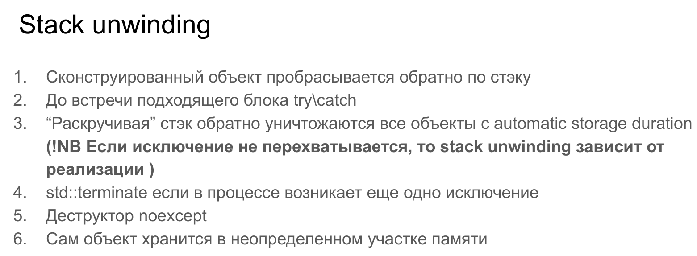
- создаётся объект исключения
- начинается поиск обработчика
- программа начинает разматывать стек (stack unwinding)
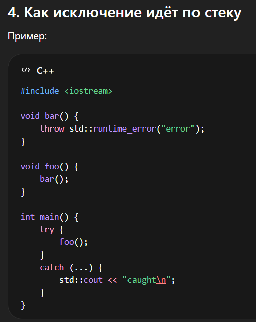
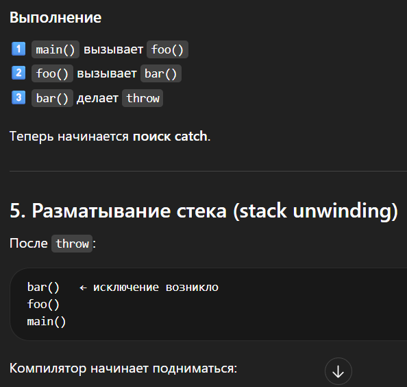
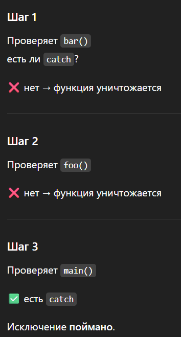
noexcept
это ключевое слово для компилятора, оно сообщает, что функция не бросает исключений noexcept{false} - значит бросает
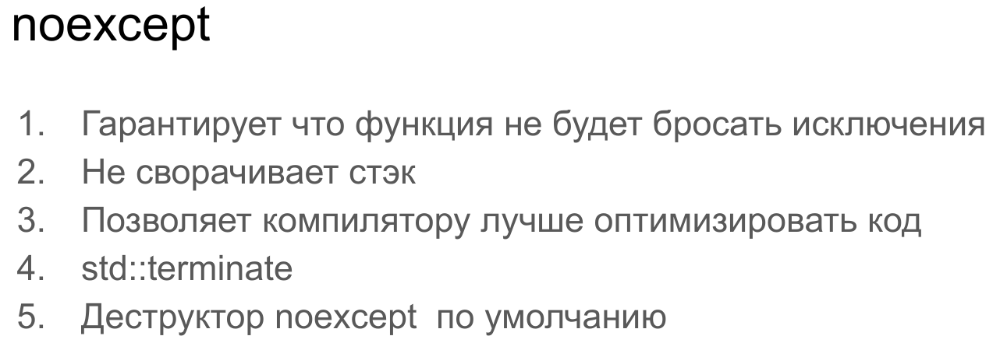
два исключения подряд приводят к std::terminate так нельзя
деструктор никогда не бросает исключение
конструктор вполне может ,например, если память не выделилась
Гарантии безопасности исключений
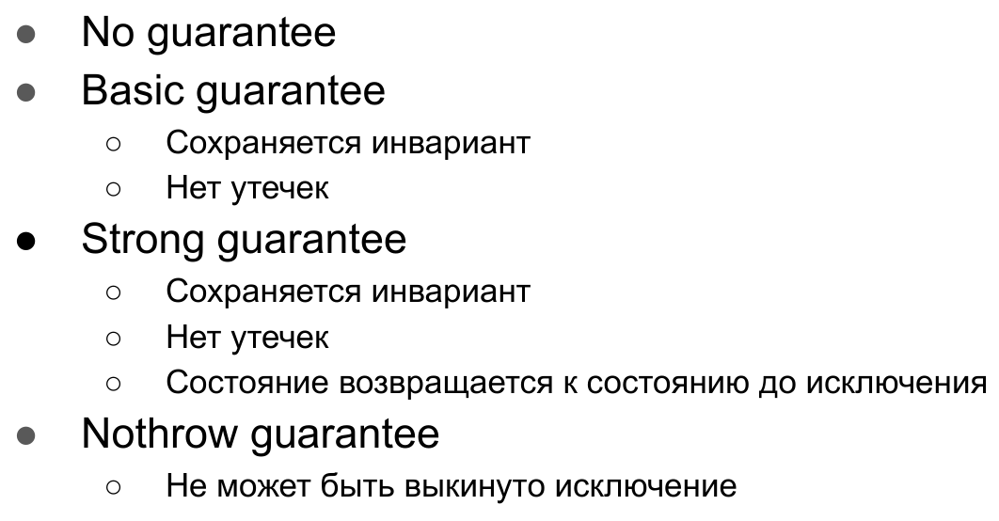
std::exception
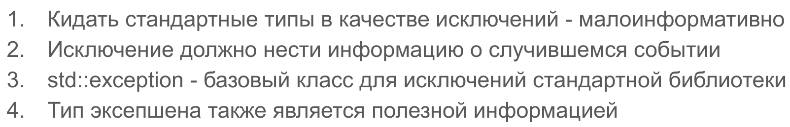
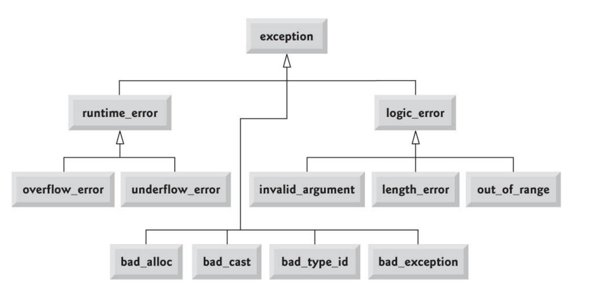
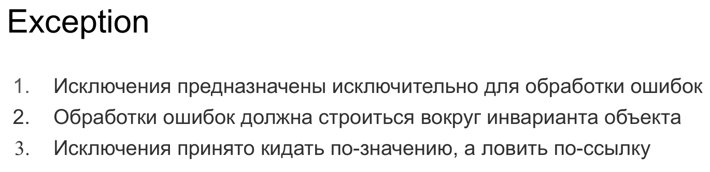
std::expected
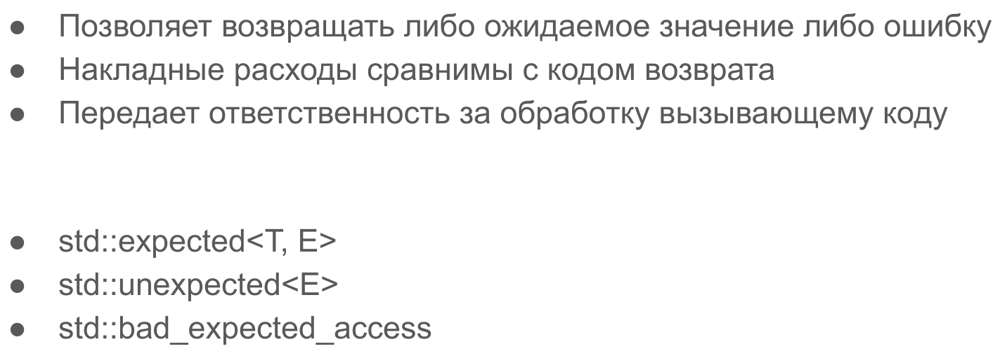
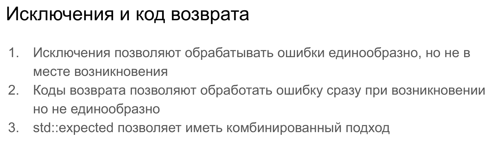
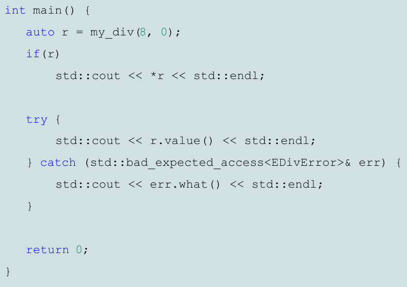
std::optional
std::optional — это контейнер, который говорит: "Здесь может быть значение, а может и не быть."
int main() {
std::optional<int> opt = std::nullopt;
opt = 10;
if (opt.has_value()) {
std::cout << opt.value() << '\n';
}
else {
std::cout << "No value" << '\n';
}
}- Проблема, которую решает
optional
Раньше часто делали так:
int find_user_id();Но что возвращать, если пользователь не найден? Обычно делали костыли:
❌ Способ 1 — специальное значение
int find_user_id() {
return -1;
}Проблема:
-1может быть валидным значением
❌ Способ 2 — указатель
int* find_user_id();Если нет результата:
return nullptr;Проблема:
- неудобно
- можно случайно разименовать
nullptr
- Решение —
std::optional
#include <optional>
std::optional<int> find_user_id();Теперь функция говорит:
либо есть int, либо ничего